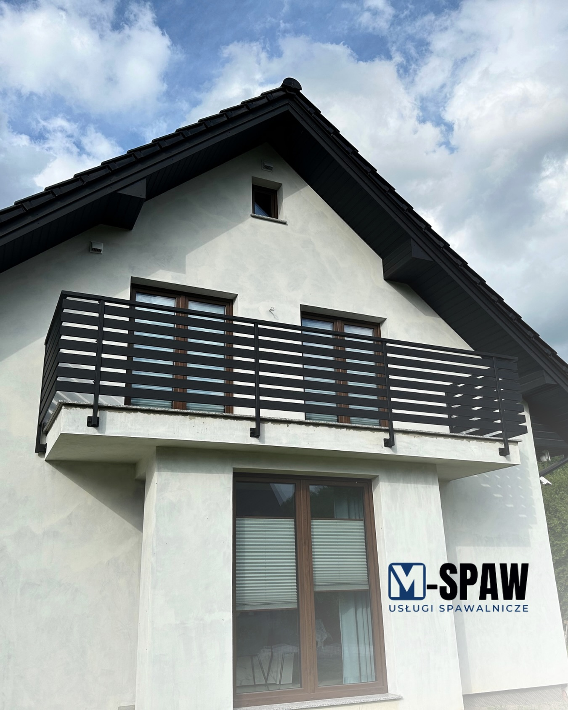

Opowiedz o pomyśle
Zdjęcie miejsca, prosty szkic i wymiary wystarczą na początek.
MACIEJ KOWALCZYK · NIEDŹWIEDŹ
Balustrady, bramy i konstrukcje stalowe. Opowiedz o swoim pomyśle — ustalimy materiał, wykończenie i sposób wykonania.
Masz pomysł? Wystarczy szkic i kilka wymiarów.

CO MOŻEMY STWORZYĆ
Każda przestrzeń ma swój wymiar. Wybierz temat projektu i opowiedz, czego potrzebujesz. Zakres wykonania ustalimy indywidualnie.
Lekka forma dla schodów, balkonów i tarasów.
01 / PRZESTRZEŃ I BEZPIECZEŃSTWOWyrazista linia i spójny charakter posesji.
02 / GRANICE W DOBRYM STYLUStelaże, ramy i elementy dopasowane do pomysłu.
03 / TWOJA WIZJA, KONKRETNA FORMAPotrzebujesz naprawy? Pokaż element i opisz, co trzeba zrobić.
Zapytaj o możliwość naprawy ↗WYKONANE PRZEZ M-SPAW
Zdjęcia realizacji z profilu M-SPAW. Kliknij wybrany projekt, aby zobaczyć go w powiększeniu.
Balustrady i brama wykonane przez M-SPAW. Materiały pochodzą z firmowego profilu Instagram.
Masz podobny pomysł? Prześlij wymiary i inspirację.
Zapytaj o własny projekt ↗OD SZKICU DO SZCZEGÓŁU
Zdjęcie miejsca, prosty szkic i wymiary wystarczą na początek.
Materiał, wykończenie, montaż i termin tworzą zakres oferty.
Prace zaczynają się po uzgodnieniu zakresu, ceny i warunków.
TWÓJ PROJEKT / PIERWSZY KROK
Wybierz parametry i zobacz przykładowy koszt. Nie znasz materiału? Zostaw dobór do rozmowy.
Wczytaj gotowy przykład lub uzupełnij parametry. Ceny są demonstracyjne.
Materiał, przekroje, detale, wykończenie, transport i warunki montażu. Naprawy oraz nietypowe konstrukcje wymagają indywidualnej oceny.
Podgląd lokalny: zapytania zapisują się tylko na tym komputerze. Nie są wysyłane do Macieja.
WARTO WIEDZIEĆ
Tak. Przygotuj zdjęcie miejsca, orientacyjne wymiary i krótki opis. Potrzebę pomiaru i dokumentacji ustala się przed wykonaniem.
W podglądzie używamy fikcyjnych cen demonstracyjnych. Rzeczywista oferta wymaga stawek wykonawcy i potwierdzenia szczegółów projektu.
Zdjęcie całego elementu, zbliżenie uszkodzenia i opis zastosowania. Jeśli znasz materiał i grubość, dopisz je w formularzu.
SPOTKAJMY SIĘ NA MIEJSCU
M-SPAW · Maciej Kowalczyk
Niedźwiedź 217Przed przyjazdem skontaktuj się z Maciejem i ustal dogodny termin.
Wyznacz trasę ↗Otwórz wizytówkę firmy ↗Mapa Google wyszukuje podany adres. Trasę dojazdu sprawdzisz po otwarciu mapy.
MASZ COŚ NA MYŚLI?
Maciej Kowalczyk
Niedźwiedź 217, 34-735 Niedźwiedź
Telefon i e-mail z firmowego profilu Instagram. Formularz i ceny w podglądzie pozostają demonstracyjne.